このページは君のフォークのSLOOP 2.4日本語化作業用。FM-1画像は本体描画コードをホスト上で実行した実ピクセルの240×240 PNG。 実機LCDの写真ではありません。Web画面はChromeのモック接続で撮影。機器への書き込み・実機の音声遅延は未確認です。
上流2.4: 563,120 B → 日本語版: 575,712 B (+12,592 B)
RAM .data+.bss: 82,916 B → 83,188 B
アプリ領域残量: 5,852 B / 581,564 B
確認済み：本体描画テスト、2.4操作ストレス、Webプロトコルテスト、375/1280pxブラウザー画面。 詳細は検証記録へ。
本体の主要画面（実ドット）
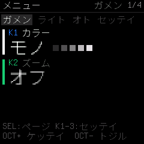
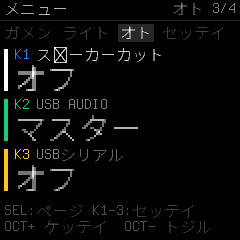
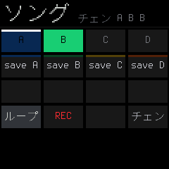
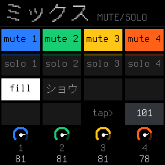


全60画面を見る


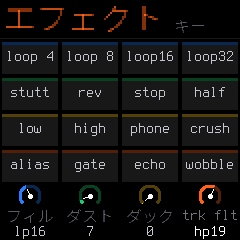


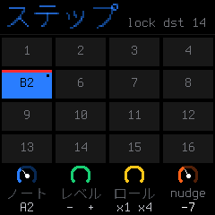
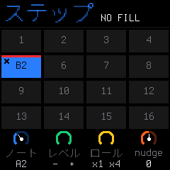


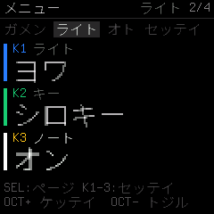
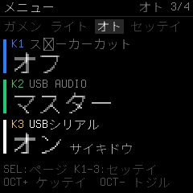


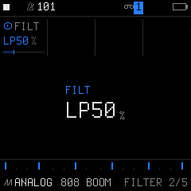


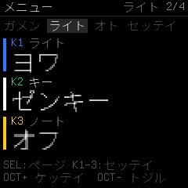


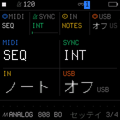


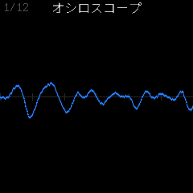
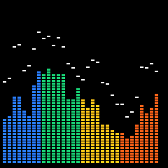
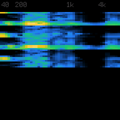
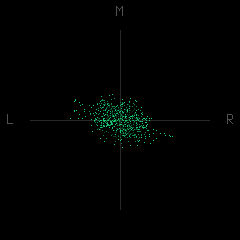
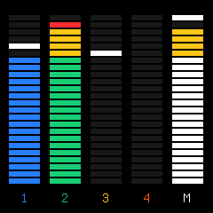
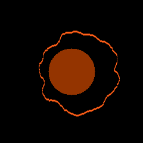
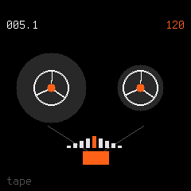
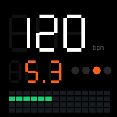
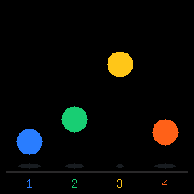
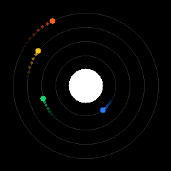
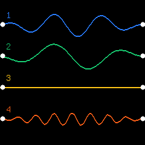
Web Editor・インストーラー


モバイル縦スクロール
375×820pxのブラウザー画面を実際にスクロールして録画。GIFをクリックすると元サイズで開きます。


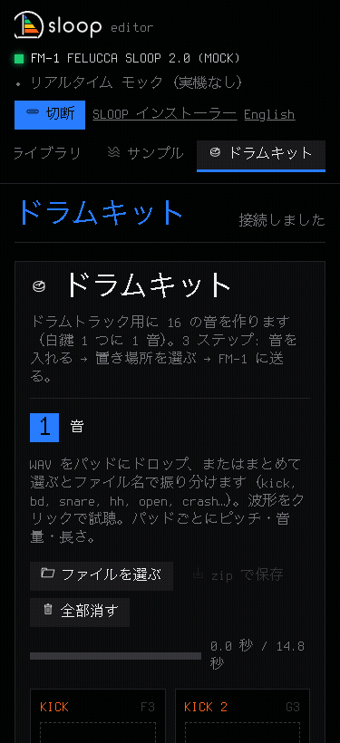

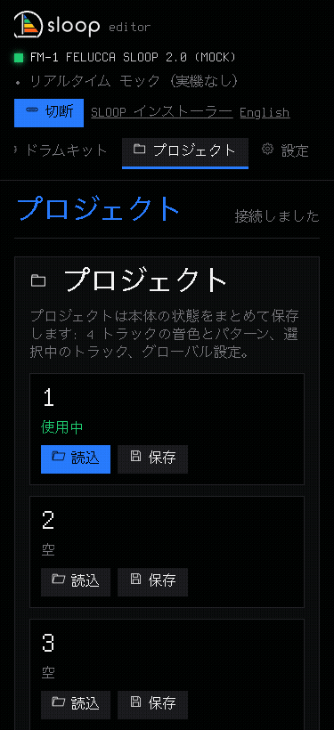